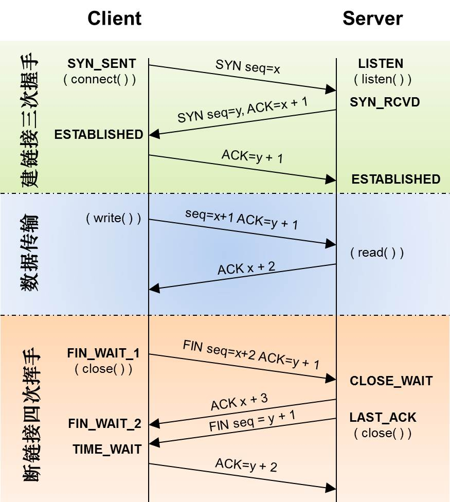

# iso 七层模型
有应用层 表示层 会话层 传输层 网络层 数据链路层 物理层，其中 http 就属于应用层，tcp 与 udp 是属于传输层

实体层：连接网络的硬件设备，就是将电脑连接起来的物理手段。如光缆 / 电缆 / 无线电波
数据链路层 (Link)：建立逻辑连接、进行硬件地址寻址、差错校验等功能，如 32 位和 64 位计算机，他们的解码方式是不一样的，数据链路层就规定个二进制数据的解读方式。
网络层 (Network)：进行逻辑地址寻址，实现不同网络之间的路径选择。网络层建立了主机之间的通信，它在网络层引入了一套地址机制：网络地址。简称网址（Ip 地址），我们可以通过 Ip 地址，可以找到唯一的一台计算机，通过主机 MAC 地址来接收和发送信息.
传输层 (Transport)：定义传输数据的协议端口号，以及流控和差错效验，定义了端口和端口之间的通信，帮助我们使不同的应用程序能够接收到自己所需要的的数据。
会话层 (Session Layer)：包括建立、管理、终止会话，用来建立和管理应用程序之间的通信，实现自动寻址，自动收发数据。
表示层 (Presentation Layer)：数据的表示、安全、压缩。比如我们要用基于 Unix 系统的 mac 电脑给 pc 机发送数据，表示层为我们解决了通信间语法的问题。
应用层 (Application)：网络服务与最终用户的一个接口。比如不同的文件类型要用不同的应用程序打开，应用层中就规定了不同应用程序的数据格式.
# http 和 tcp 的联系
- http 是基于 tcp，就相当于生活中的吃饭时候你都会用到碗，这个碗就是 tcp，吃饭这件事情就相当于 http，因为我们 http 发送数据之前，会先进行 tcp 三次握手，记住这时候只是发送一些状态码的确认等，并没有对 http 的数据进行发送。
- http 长连接和短连接，其实就是 tcp 长连接与短连接，在 HTTP/1.0 中默认使用短连接。也就是说，客户端和服务器每进行一次 HTTP 操作，就建立一次连接，请求结束就中断连接，HTTP1.1 就使用长连接，
用长连接的 HTTP 协议，会在响应头加入这行代码：
Connection:keep-alive
使用长连接每次打开一个网页除了第一次需要三次握手连接，接下来请求服务器就不用再握手了，就一直使用这个连接，这个 keep-alive 不会永久保持，这个可以在服务器端设置
- 长连接和短连接简短概括
短连接就相当于每次一碗饭就去换一个碗，长连接就是每次吃饭都使用这个碗
# tcp 和 udp 的区别
tcp 是面向连接的，udp 不是面向连接的，怎么说呢？就相当于我们生活中打电话或者微信聊天，要先嘟嘟嘟连接，之后才可以打电话聊天，这个就是面向连接的，也是比较可靠的，udp 是不用先去做连接的，所以叫做面向非连接，类似生活中发短信，直接发送过去
有人会问了，为什么 http 是基于 tcp 而不是 udp 呢？
这个 tcp 协议比较可靠，不过，目前，有人正在研究基于 TCP+UDP 混合的 HTTP 协议。

# IP：
网络层协议；（高速公路）
为计算机网络相互连接进行通信而设计的协议。
IP 协议对应于网络层，TCP 协议对应于传输层，而 HTTP 协议对应于应用层。注意 TPC/IP 位于传输层，它主要用来解决数据如何在网络中传输，与 IP 协议要区分开
# TCP 和 UDP：
传输层协议；（卡车）
TCP 和 UDP 使用 IP 协议从一个网络传送数据包到另一个网络。把 IP 想像成一种高速公路，它允许其它协议在上面行驶并找到到其它电脑的出口。TCP 和 UDP 是高速公路上的 “卡车”，它们携带的货物就是像 HTTP，文件传输协议 FTP 这样的协议等。
# HTTP
# HTTP/1.x
应用层协议；（货物）。HTTP (超文本传输协议) 是利用 TCP 在两台电脑 (通常是 Web 服务器和客户端) 之间传输信息的协议。客户端使用 Web 浏览器发起 HTTP 请求给 Web 服务器，Web 服务器发送被请求的信息给客户端。
HTTP 是应用层协议，主要用于包装数据
HTTP/1.x 的协议是 文本协议，是给人看的，对机器不友好，如果要对机器友好，二进制协议才是更好的选择.
HTTP/1.x 另一个问题就在于它的交互模式，一个连接每次只能一问一答，也就是 client 发送了 request 之后，必须等到 response，才能继续发送下一次请求.
# HTTP/2.x
HTTP/2 是一个二进制协议，这也就意味着它的可读性几乎为 0，但幸运的是，我们还是有很多工具，譬如 Wireshark， 能够将其解析出来
- Stream： 一个双向流，一条连接可以有多个 streams。
- Message： 也就是逻辑上面的 request，response。
- Frame:：数据传输的最小单位。每个 Frame 都属于一个特定的 stream 或者整个连接。一个 message 可能有多个 frame 组成
HTTP/2 通过 stream 支持了连接的多路复用，提高了连接的利用率.
# gPRC
gRPC 是 Google 基于 HTTP/2 以及 protobuf 的，要了解 gRPC 协议，只需要知道 gRPC 是如何在 HTTP/2 上面传输就可以了.
gRPC 的 service 接口是基于 protobuf 定义的，我们可以非常方便的将 service 与 HTTP/2 关联起来.
- Path : /Service-Name/
- Service-Name : ?( {proto package name} "." )
- Message-Type :
- Content-Type : "application/grpc+proto"
# SOCKET：
套接字，TCP/IP 网络的 API。(港口码头 / 车站) Socket 是应用层与 TCP/IP 协议族通信的中间软件抽象层，它是一组接口。socket 是在应用层和传输层之间的一个抽象层，它把 TCP/IP 层复杂的操作抽象为几个简单的接口供应用层调用已实现进程在网络中通信。
Socket 相当于调用接口 (API)，用来调取 TCP/IP 协议，Socket 接口定义了许多函数或例程，用以开发 TCP/IP 网络上的应用程序。
# TCP/IP：
代表传输控制协议 / 网际协议，指的是一系列协议，TCP/IP 模型在 OSI 模型的基础上进行了简化，变成了四层，从下到上分别为：网络接口层、网络层、传输层、应用层。
###TCP/UDP 区别
TCP: （传输控制协议，Transmission Control Protocol）：(类似打电话) 面向连接、传输可靠（保证数据正确性）、有序（保证数据顺序）、传输大量数据（流模式）、速度慢、对系统资源的要求多，程序结构较复杂，每一条 TCP 连接只能是点到点的，TCP 首部开销 20 字节。
UDP: (用户数据报协议，User Data Protocol)：（类似发短信） 面向非连接 、传输不可靠（可能丢包）、无序、传输少量数据（数据报模式）、速度快，对系统资源的要求少，程序结构较简单 ，UDP 支持一对一，一对多，多对一和多对多的交互通信，UDP 的首部开销小，只有 8 个字节。
# tcp 三次握手建立连接

第一次握手：客户端发送 syn 包 (seq=x) 到服务器，并进入 SYN_SEND 状态，等待服务器确认；
第二次握手：服务器收到 syn 包，必须确认客户的 SYN（ack=x+1），同时自己也发送一个 SYN 包（seq=y），即 SYN+ACK 包，此时服务器进入 SYN_RECV 状态；
第三次握手：客户端收到服务器的 SYN＋ACK 包，向服务器发送确认包 ACK (ack=y+1)，此包发送完毕，客户端和服务器进入 ESTABLISHED 状态，完成三次握手。
握手过程中传送的包里不包含数据，三次握手完毕后，客户端与服务器才正式开始传送数据。理想状态下，TCP 连接一旦建立，在通信双方中的任何一方主动关闭连接之前，TCP 连接都将被一直保持下去。
主机 A 向主机 B 发出连接请求数据包：“我想给你发数据，可以吗？”，这是第一次对话；
主机 B 向主机 A 发送同意连接和要求同步（同步就是两台主机一个在发送，一个在接收，协调工作）的数据包：“可以，你什么时候发？”，这是第二次对话；
主机 A 再发出一个数据包确认主机 B 的要求同步：“我现在就发，你接着吧！”，这是第三次对话。
三次 “对话” 的目的是使数据包的发送和接收同步，经过三次 “对话” 之后，主机 A 才向主机 B 正式发送数据。
# Websocket
Websocket 协议解决了服务器与客户端全双工通信的问题。
注：什么是单工、半双工、全工通信？
信息只能单向传送为单工；
信息能双向传送但不能同时双向传送称为半双工；
信息能够同时双向传送则称为全双工。
# WebSocket 和 Socket 区别
可以把 WebSocket 想象成 HTTP (应用层)，HTTP 和 Socket 什么关系，WebSocket 和 Socket 就是什么关系。
HTTP 协议有一个缺陷：通信只能由客户端发起，做不到服务器主动向客户端推送信息。
WebSocket 协议在 2008 年诞生，2011 年成为国际标准。所有浏览器都已经支持了。
它的最大特点就是，服务器可以主动向客户端推送信息，客户端也可以主动向服务器发送信息，是真正的双向平等对话，属于服务器推送技术的一种。
# 使用 Socket 建立网络
网络上两个程序通过双向通信实现数据交换，socket 又叫套接字，每个应用程序开启后，都会在传输层端口上绑定一个 socket，不同应用程序之间通过寻找端口找到 socket 实现数据通信。
Socket 连接过程分为三个步骤：服务器监听，客户端请求，连接确认。
1、服务器监听：服务器端套接字并不定位具体的客户端套接字，而是处于等待连接的状态，实时监控网络状态，等待客户端的连接请求。
2、客户端请求：指客户端的套接字提出连接请求，要连接的目标是服务器端的套接字。为此，客户端的套接字必须首先描述它要连接的服务器的套接字，指出服务器端套接字的地址和端口号，然后就向服务器端套接字提出连接请求。
3、连接确认：当服务器端套接字监听到或者说接收到客户端套接字的连接请求时，就响应客户端套接字的请求，建立一个新的线程，把服务器端套接字的描述发给客户端，一旦客户端确认了此描述，双方就正式建立连接。